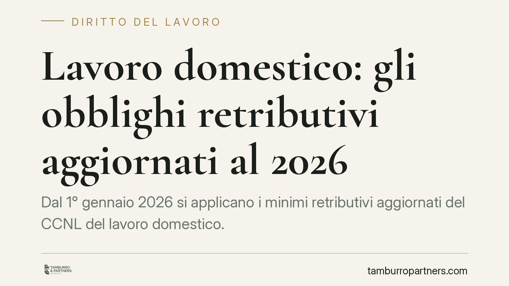

Lavoro domestico: gli obblighi retributivi aggiornati al 2026
Dal 1° gennaio 2026 si applicano i minimi retributivi aggiornati del CCNL del lavoro domestico. Per chi assume colf, badanti o babysitter non si tratta di un dettaglio contabile: sbagliare le voci di paga espone a differenze retributive, sanzioni contributive e contenzioso. Ecco cosa prevede la disciplina e come muoversi correttamente.

Il quadro di riferimento
Il rapporto di lavoro domestico è regolato dalla Legge 2 aprile 1958, n. 339 e dal CCNL del lavoro domestico, sottoscritto dalle organizzazioni di categoria dei datori e dei lavoratori. I minimi retributivi del contratto vengono adeguati periodicamente in base all'ultimo rinnovo contrattuale e alla variazione annuale ISTAT del costo della vita.
I valori in vigore dal 1° gennaio 2026 riflettono questo adeguamento. Poiché le tabelle sono soggette a revisioni e la Commissione nazionale per il lavoro domestico ne cura la pubblicazione, consigliamo di verificare sempre l'importo esatto della fascia e del livello di inquadramento prima di procedere al pagamento.
Le voci che compongono la retribuzione
La paga del lavoratore domestico non si esaurisce nella mensilità. Il datore deve considerare un insieme di voci, ciascuna con regole proprie.
Minimi tabellari. Variano in funzione del livello di inquadramento (dal livello A al livello DS) e della tipologia del rapporto, con distinzione tra personale convivente e non convivente. Per il personale convivente parte della retribuzione può essere corrisposta in natura, secondo i valori convenzionali di vitto e alloggio fissati annualmente dalle tabelle: anche questi importi vanno verificati nella versione aggiornata.
Tredicesima mensilità. Matura in ragione di un dodicesimo per ogni mese di servizio prestato nell'anno e si corrisponde in occasione del Natale, di norma entro il mese di dicembre.
Ferie. Il contratto riconosce 26 giorni lavorativi di ferie retribuite per anno di servizio, da fruire secondo gli accordi tra le parti. Resta il principio di irrinunciabilità del periodo minimo.
Lavoro straordinario. Le ore eccedenti l'orario contrattuale sono retribuite con le maggiorazioni percentuali previste dal CCNL, differenziate a seconda che lo straordinario sia diurno, notturno o festivo.
Scatti di anzianità. Ogni biennio di servizio presso lo stesso datore matura uno scatto pari al 4% della retribuzione minima contrattuale, con un tetto massimo di 7 scatti. Oltre tale limite non maturano ulteriori incrementi.
Trattamento di fine rapporto. Il TFR segue la regola generale dell'art. 2120 del Codice civile: si accantona annualmente e si corrisponde alla cessazione del rapporto, qualunque ne sia la causa.
Perché conta per il datore di lavoro
Nel lavoro domestico il datore è una famiglia, non un'impresa strutturata: spesso manca un ufficio del personale e gli errori nascono dalla buona fede. Ma gli obblighi restano pieni. Il versamento dei contributi all'INPS e, dove previsto, alla Cassa colf è condizione di regolarità del rapporto; la mancata o errata corresponsione delle voci retributive può generare richieste di differenze anche a distanza di tempo.
Sul punto della prescrizione occorre prudenza. Le differenze retributive sono in linea generale soggette al termine quinquennale, ma nel rapporto domestico — privo delle tutele di stabilità proprie del lavoro subordinato nell'impresa — l'orientamento giurisprudenziale ammette che la decorrenza del termine possa slittare alla cessazione del rapporto, per evitare che il timore del licenziamento comprima la rivendicazione dei crediti. Ne consegue che pretese risalenti possono restare esigibili ben oltre quanto una lettura meramente quinquennale lascerebbe supporre.
Cosa fare in concreto
- Verificate il livello di inquadramento del lavoratore e confrontatelo con le tabelle retributive in vigore dal 1° gennaio 2026, controllando anche i valori convenzionali di vitto e alloggio per i conviventi.
- Conservate le buste paga e la documentazione dei versamenti contributivi: sono la prova dell'adempimento in caso di contestazione.
- Tracciate le ore effettive, in particolare lo straordinario, per applicare le maggiorazioni corrette ed evitare richieste successive.
- Verificate gli scatti di anzianità maturati, ricordando il limite massimo di sette, e aggiornate la retribuzione di conseguenza.
- Accantonate il TFR anno per anno, così da non trovarvi scoperti al momento della cessazione del rapporto.
In presenza di rapporti risalenti o di dubbi sul calcolo pregresso, una verifica preventiva della posizione retributiva e contributiva consente di prevenire il contenzioso.
---
*Contributo informativo a cura di Tamburro & Partners - Avv. Giuseppe Tamburro. Non costituisce parere legale.*
Ogni storia di lavoro ha i suoi tempi.
Se gestisci HR e vuoi un confronto su contenzioso, ispezioni o licenziamenti, scrivi allo studio. Ti rispondiamo entro un giorno lavorativo.